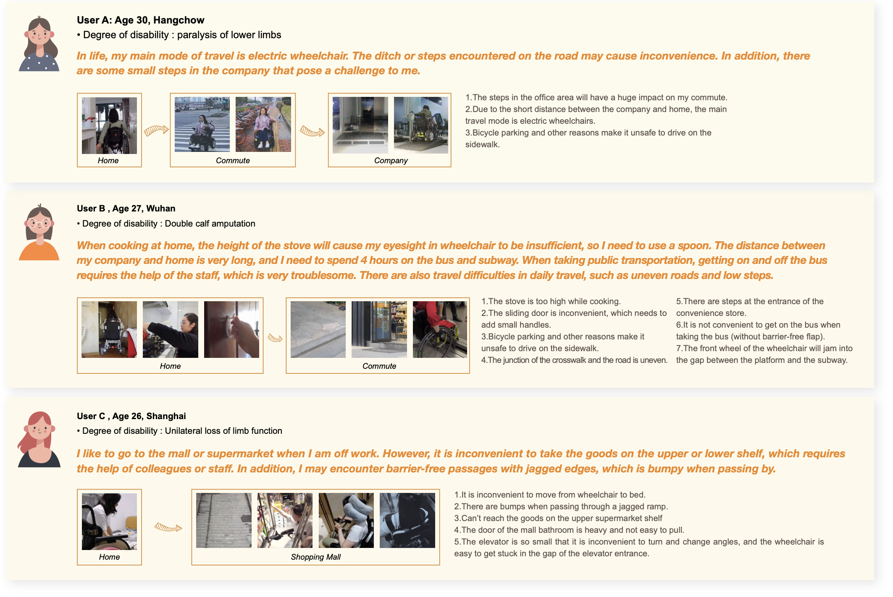
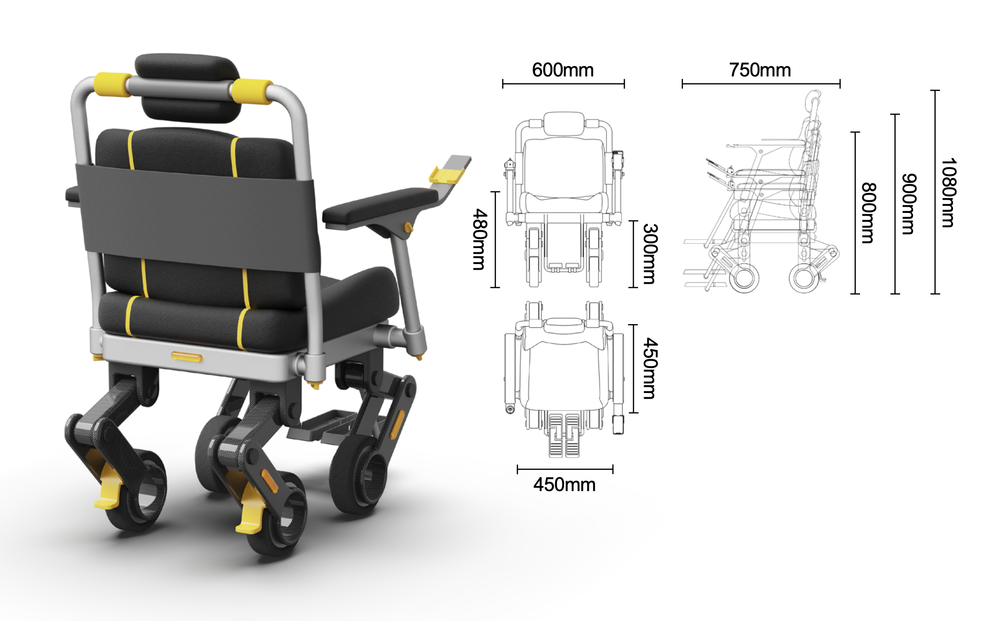
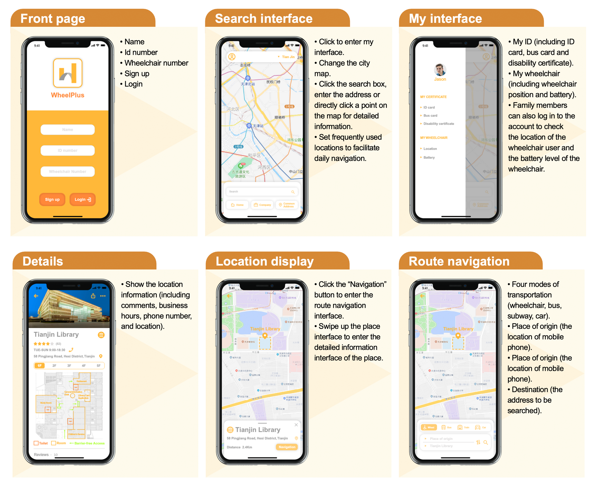

WheelPlus
The project aims to design wheelchair and supporting software for people with lower limb disabilities and mobility impairments. On the one hand, the designed wheelchair can run smoothly when facing ditch or bumpy road conditions, and solve the inconvenience problem in life by lowering and raising the use height. On the other hand, the supporting software for wheelchairs can provide users and their families with route navigation on barrier-free passages.
Year:
2022
Duration:
3 months
Platform:
Mobile
Role:
Product Designer
Tools & Skills:
Rhino; CAD; KeyShot; Adobe Photoshop; User Research; Sketching
01 Background
Population Data
According to China Disabled Persons' Federation, the total number of people with disabilities in China in 2010 was 85.02 million, of which 24.72 million people with physical disability.
Construction of barrier-free facilities
Based on the survey experience data, it can be found that the current overall penetration rate of barrier-free facilities in China is still relatively low. The penetration rate of field experience surveys was 40.6%, and the penetration rate of public perception surveys was 37.0%.
Source : 2017 Hundred Cities Barrier-free Facilities Survey and Experience Report

Economic Source
According to a survey conducted by the China Disabled Persons' Federation, the main sources of income for people with physical disability are as follows.

Related investigation
According to the "Health Times", more than 65% of interviewers said that they have not seen a disabled person in public for a week. More than 75% of disabled people said that inconvenient transportation is the main reason for not going out.

02 Interview

Takeaway:
• Through the survey and interview of three wheelchair users, it can be found that they will
encounter gaps in different
life and work scenes, which cause inconvenience to their actions.
• At the same time, the limitation of the fixed height of the wheelchair will also bring a lot of
trouble to life.
• In addition, the lack of accessibility is also a major travel problem.
03 Competitive Product Analysis

Takeaway:
• The stair-climbing wheelchair is too large and inflexible to turn, which causes inconvenience and
is difficult to use
in a small space.
• When climbing stairs, wheelchairs are easily restricted by the height of
the stairs, and are easy to
slip and cause danger.
• The two functions of climbing and lifting cannot be satisfied at the same time.
04 Concept Design
Target user
• People with physical disabilities or limited mobility.
• Wheelchair users who need to travel by public transportation.
• Users who use wheelchairs
frequently in daily life.
Aim
• Help users travel more smoothly in their daily lives.
• Help users to smoothly raise or lower the use height to get items of different heights.
•
Help users quickly find barrier-free passages.
Keypoint

05 Source of Inspiration
• Boston Dynamics BigDog is a dynamically balanced quadruped robot.
• It does not occur or track, and uses four mechanical legs to move.
• The computer installed in the re-installation can control it to maintain movement and
balance.

06 sketch
Conceptual Design

Final Plan

Concept Design
Measurements

App

Final Desing